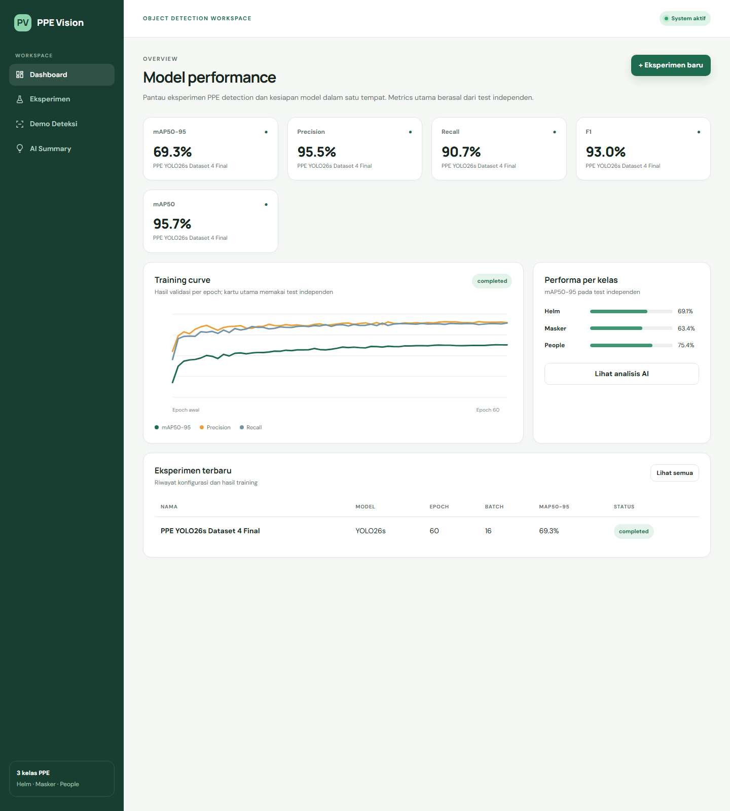
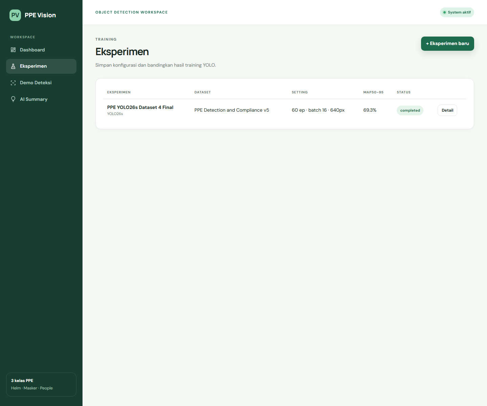
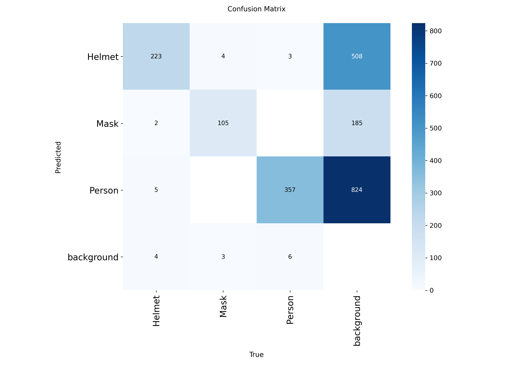
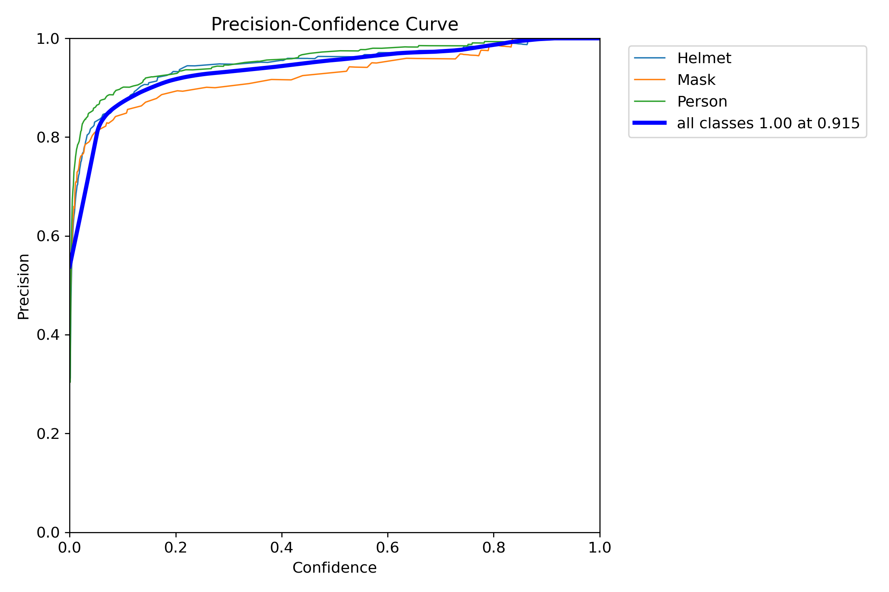
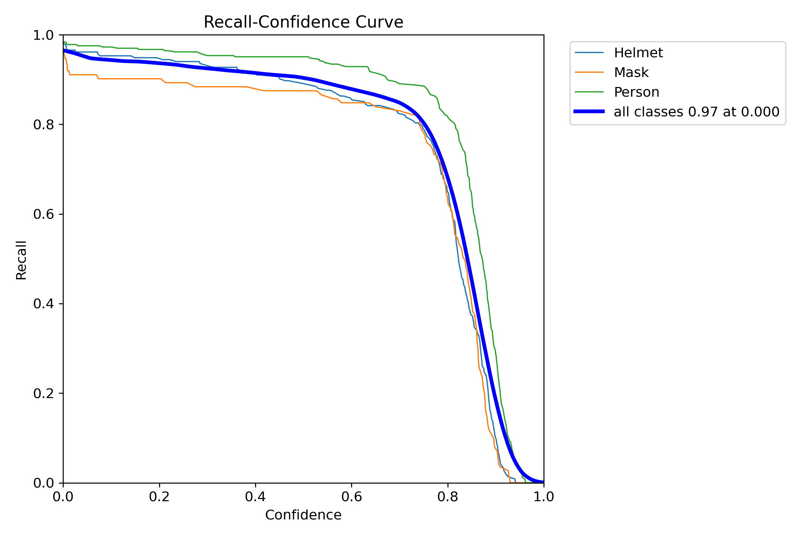
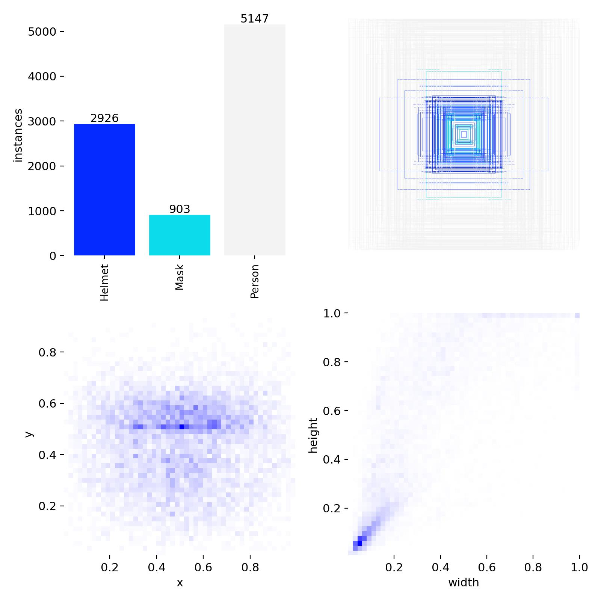
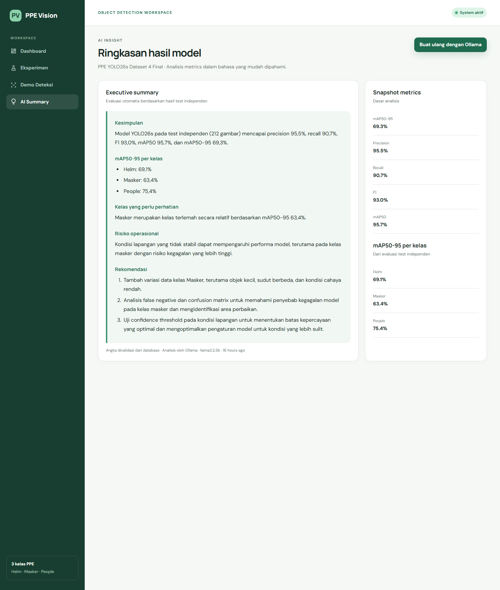

PPE Vision · Panduan belajar dashboard
Memahami Dashboard,
Eksperimen, dan Grafik
Penjelasan menyeluruh tentang isi layar, sumber data, arti setiap metrik dan grafik, keputusan membuat eksperimen read-only, alur kode, keamanan production, serta jawaban yang dapat dipakai saat presentasi.
Model final: PPE YOLO26s Dataset 4 Final
Basis audit: source code dan database lokal yang sama dengan deployment final
Tanggal: 15 Oktober 2026
Urutan belajar yang paling mudah
Jangan menghafal grafik satu per satu. Mulailah dari aliran data: hasil training masuk ke database, dashboard membaca database, lalu grafik mengubah angka menjadi bentuk visual.
training + evaluasi
hasil model
menyimpan eksperimen
visualisasi
Jika waktu belajar 30 menit
- Bab 2: anatomi dashboard.
- Bab 4–7: metrik dan grafik.
- Bab 9–11: alur eksperimen final.
- Bab 18: pertanyaan presentasi.
Kalimat inti
Dashboard tidak menghitung ulang model. Dashboard adalah lapisan pelacakan eksperimen dan komunikasi hasil: angka sudah dihitung oleh evaluasi YOLO, kemudian disimpan dan ditampilkan secara konsisten.
Isi laporan
Apa tujuan dashboard ini?
Dashboard PPE Vision menjawab empat pertanyaan manajemen model:
1. Seberapa baik model?
Dijawab oleh precision, recall, F1, mAP50, dan mAP50-95 pada test independen.
2. Apakah training stabil?
Dijawab oleh training curve per epoch dan artefak losses di detail eksperimen.
3. Kelas mana yang lemah?
Dijawab oleh mAP50-95 per kelas, confusion matrix, serta kurva PR/F1.
4. Bagaimana hasil direproduksi?
Dijawab oleh catatan model, dataset, epoch, batch, image size, optimizer, device, artefak, dan riwayat eksperimen.
Tiga peran utama
| Peran | Yang diperoleh | Contoh keputusan |
|---|---|---|
| Developer/ML engineer | Riwayat parameter, kurva, kelas lemah | Perbaiki dataset Masker dan uji threshold. |
| Recruiter/assessor | Bukti model dievaluasi, bukan sekadar demo | Memastikan precision, recall, mAP tersedia. |
| Pengguna operasional | Ringkasan kemampuan dan risiko | Tidak langsung memakai model tanpa uji lapangan. |
Anatomi halaman Dashboard

Dari URL sampai angka tampil
Controller memilih data
| Variabel | Fungsi | Dipakai saat ini? |
|---|---|---|
latestRun | Run dengan finished_at paling baru untuk kartu dan grafik. | Ya. |
runs | Lima record terbaru untuk tabel bawah. | Ya. |
experimentCount | Total eksperimen. | Sudah disiapkan controller, belum divisualkan. |
detectionCount | Total inference yang selesai. | Sudah disiapkan controller, belum divisualkan. |
Mengapa pola MVC baik?
Route hanya menentukan alamat, controller mengambil data, model memetakan tabel database, dan Blade mengurus tampilan. Pemisahan ini membuat angka dapat dites tanpa browser dan desain dapat diubah tanpa mengubah logika database.
Memahami lima kartu metrik utama
Precision
Dari seluruh deteksi positif yang dibuat model, proporsi yang benar sangat tinggi. Fokusnya adalah mengendalikan false positive.
Recall
Dari seluruh objek target yang benar-benar ada, model menemukan sebagian besar. Kekurangannya berkaitan dengan false negative.
F1
Rata-rata harmonik precision dan recall; tinggi hanya bila keduanya sama-sama kuat.
mAP50
Rata-rata AP tiga kelas ketika prediksi dianggap cocok pada IoU minimal 0,50.
mAP50-95
Rata-rata AP pada sepuluh ambang IoU. Lebih ketat dan menjadi indikator utama kualitas lokalisasi.
Sumber
Jumlah gambar test independen. Data test tidak digunakan untuk memperbarui bobot saat training.
Contoh konseptual
Jika model membuat 100 prediksi dan 95 benar, precision kira-kira 95%. Jika terdapat 100 objek sebenarnya dan 91 ditemukan, recall kira-kira 91%. Angka dashboard dihitung dengan prosedur evaluasi Ultralytics lintas kelas dan confidence, sehingga contoh ini hanya untuk membangun intuisi—bukan rekonstruksi hitungan mentah.
Mengapa mAP50 tinggi tetapi mAP50-95 lebih rendah?
IoU mengukur tumpang tindih kotak
mAP50 = 95,7%
Pada syarat IoU 0,50, banyak kotak sudah cukup mengenai objek. Ini bagus untuk menjawab “apakah objek ditemukan?”.
mAP50-95 = 69,3%
Syarat dinaikkan bertahap sampai 0,95. Kotak harus semakin presisi mengikuti batas objek, sehingga nilainya wajar lebih rendah.
Selisih sekitar 26,4 poin persentase bukan bug. Artinya kemampuan menemukan objek pada batas longgar sangat kuat, sedangkan presisi lokalisasi pada ambang sangat ketat masih memiliki ruang perbaikan. Masker kecil, wajah miring, dan occlusion dapat membuat batas kotak lebih sulit tepat.
Dari AP menuju mAP
- Untuk satu kelas, prediksi diurutkan berdasarkan confidence.
- Precision dan recall dihitung pada berbagai threshold.
- Luas di bawah kurva Precision–Recall menjadi AP.
- AP kelas Helm, Masker, dan People dirata-ratakan menjadi mAP.
- mAP50-95 juga merata-ratakan hasil pada IoU 0,50; 0,55; …; 0,95.
Membaca Training curve

Apa yang digambar dashboard?
| Warna | Data | Makna |
|---|---|---|
| Hijau | mAP50-95 validation | Kualitas gabungan klasifikasi dan lokalisasi ketat. |
| Oranye | Precision validation | Seberapa bersih prediksi positif pada setiap epoch. |
| Biru | Recall validation | Seberapa lengkap objek validation ditemukan. |
Cara SVG dibuat
Setiap baris training_history menjadi satu titik. Posisi horizontal mengikuti urutan epoch, sedangkan posisi vertikal dihitung dari nilai 0–1. Titik disambungkan sebagai polyline. Grafik ini ringan karena tidak memerlukan library chart eksternal.
Interpretasi model final
- Peningkatan paling besar terjadi pada epoch awal: model cepat mempelajari pola dasar.
- Kurva kemudian melandai: training mendekati konvergensi, bukan berhenti bekerja.
- Fluktuasi kecil antar-epoch normal akibat batch dan variasi data.
- Best epoch adalah 58; checkpoint
best.ptdipilih berdasarkan performa validation terbaik, bukan sekadar epoch terakhir. - Loss train dan validation sama-sama turun pada artefak lengkap; tidak terlihat divergensi ekstrem yang langsung menunjukkan overfitting berat.
Performa per kelas
| Kelas aplikasi | Kelas sumber | Precision | Recall | F1 | mAP50 | mAP50-95 |
|---|---|---|---|---|---|---|
| Helm | Helmet | 96,3% | 89,5% | 92,8% | 96,2% | 69,1% |
| Masker | Mask | 92,9% | 87,5% | 90,1% | 93,1% | 63,4% |
| People | Person | 97,2% | 95,1% | 96,2% | 97,7% | 75,4% |
People paling stabil
Nilai tertinggi pada semua metrik utama. Tubuh manusia biasanya lebih besar daripada masker sehingga pola visual dan kotaknya lebih mudah dipelajari.
Masker perlu perhatian
mAP50-95 63,4% adalah yang terendah. Masker relatif kecil, bentuk/warna beragam, dapat tertutup, dan anotasi “semuka” atau tidak konsisten dapat mengganggu lokalisasi.
Mengapa bar memakai mAP50-95?
Agar perbandingan kelas menggunakan ukuran yang ketat dan konsisten. Panjang bar hanyalah representasi nilai × 100%; ia tidak mengubah data.
Bagian “Eksperimen terbaru”
Tabel bawah adalah ringkasan maksimal lima record terbaru berdasarkan waktu pembuatan. Kolomnya dipilih untuk menjawab “run apa, konfigurasi singkat apa, hasil utama berapa, dan statusnya apa?”.
| Kolom | Alasan ditampilkan |
|---|---|
| Nama | Identitas manusiawi, misalnya baseline atau dataset-v4-final. |
| Model | Membedakan arsitektur/ukuran checkpoint. |
| Epoch | Jumlah siklus training. |
| Batch | Jumlah gambar per update; relevan terhadap memori dan dinamika optimisasi. |
| mAP50-95 | Metrik pembanding utama yang ketat. |
| Status | draft berarti baru dicatat; completed berarti metrik telah tersedia. |
Mengapa hanya lima?
Dashboard harus ringkas. Seluruh riwayat tersedia melalui “Lihat semua”, yang menggunakan pagination 10 record per halaman agar tetap ringan ketika eksperimen bertambah.
Halaman daftar Eksperimen

Bedanya dengan dashboard
| Dashboard | Daftar eksperimen |
|---|---|
| Menonjolkan model terbaru dan gambaran cepat. | Menjadi katalog seluruh run. |
| Maksimal lima run terbaru. | Sepuluh run per halaman dengan pagination. |
| Memuat kurva dan kelas. | Memudahkan pencarian run dan pembukaan detail. |
Tombol Detail membuka record yang dipilih menggunakan Laravel route model binding: ID pada URL otomatis diterjemahkan menjadi objek TrainingRun. Jika ID tidak ada, Laravel memberi 404.
Mengapa tombol “Eksperimen Baru” dihapus?
Tombol lama hanya membuat record metadata. Ia tidak menjalankan Python, GPU, atau training YOLO sehingga berpotensi membuat assessor salah memahami kemampuan aplikasi.
| Pertimbangan | Keputusan final |
|---|---|
| Syarat assessment | Tidak meminta CRUD atau tombol membuat eksperimen. |
| Bukti setting training | Tetap tersedia pada daftar dan detail eksperimen. |
| Bukti hasil/matriks | Tetap tersedia sebagai metrik, grafik, dan artefak evaluasi. |
| Training sebenarnya | Tetap dilakukan di Google Colab menggunakan Python/GPU. |
| Kejelasan UI | Halaman menjadi read-only dan fokus pada model final. |
Siklus hidup model final
best.pt, results.csv, dan grafik.Catatan implementasi saat ini
Form impor membaca results.csv untuk epoch, precision, recall, dan mAP50-95. Path sembilan artefak model final ditanam melalui seeder. Belum ada UI umum untuk mengunggah semua gambar artefak satu per satu. Ini bukan error, tetapi batas desain versi sekarang.
DatabaseSeeder dengan metadata checkpoint, sehingga kartu test, nilai per kelas, path artefak, dan ringkasan tetap konsisten setelah instalasi database.Halaman detail eksperimen

Detail adalah “kartu identitas lengkap” satu run. Bagian atas mengulang lima metrik, lalu menampilkan konfigurasi training, pemetaan kelas, artefak evaluasi, dan—khusus mode admin lokal—form impor.
| Bagian | Pertanyaan yang dijawab |
|---|---|
| Kartu metrik | Seberapa baik hasil final run ini? |
| Konfigurasi training | Bagaimana run ini dibuat? |
| Kelas objek | Bagaimana label model dipetakan ke istilah assessment? |
| Artefak evaluasi | Apakah angka didukung grafik dan contoh prediksi? |
| Impor hasil | Bagaimana data hasil Colab masuk ke database? |
| Analisis AI | Bagaimana metrik diterjemahkan menjadi insight? |
Cara membaca sembilan artefak evaluasi
1. Training Results
Fungsi: melihat proses belajar sepanjang epoch. Loss turun berarti kesalahan optimisasi berkurang. Kurva validation yang membaik bersama train memberi indikasi generalisasi, walau keputusan overfitting sebaiknya tetap memakai data numerik dan contoh baru.
2. Confusion Matrix

Fungsi: mengetahui jenis kesalahan, bukan hanya skor total. Diagonal berarti prediksi kelas benar; sel di luar diagonal menunjukkan kelas tertukar atau objek/background keliru.
3. Normalized Confusion Matrix

Mengapa perlu dua matrix? Matrix absolut menunjukkan volume kasus; normalized menunjukkan rasio. Kelas kecil dapat tampak tidak penting pada hitungan mentah tetapi sebenarnya mempunyai rasio kesalahan tinggi.
Kurva threshold dan kualitas lokalisasi
4. Precision–Recall Curve

Fungsi: menunjukkan hubungan precision dan recall ketika confidence threshold berubah. Luas kurva berhubungan dengan AP. Garis Mask lebih rendah daripada kelas lain, sesuai kesimpulan bahwa Masker adalah kelas terlemah.
5. F1–Confidence Curve

F1 biasanya naik ketika prediksi sangat lemah disaring, mencapai puncak, lalu turun ketika threshold terlalu tinggi dan banyak objek terlewat. Puncak global pada artefak memberi kandidat threshold, tetapi threshold produksi tetap harus diuji pada video lapangan.
6. Precision–Confidence Curve

Konsekuensi: menaikkan confidence mengurangi false positive, tetapi tidak gratis—recall biasanya ikut menurun.
Recall, distribusi data, dan pemeriksaan visual
7. Recall–Confidence Curve

Untuk keselamatan, false negative bisa lebih berbahaya daripada false positive. Threshold sebaiknya tidak dipilih hanya untuk membuat tampilan “bersih”; perlu menimbang objek PPE yang terlewat.
8. Distribusi Label Dataset

Fungsi: menemukan ketidakseimbangan kelas, dominasi ukuran tertentu, atau posisi objek yang bias. Model dapat lemah pada masker kecil apabila dataset lebih banyak berisi kotak besar atau anotasi wajah yang tidak konsisten.
9. Contoh Prediksi Validation

Angka agregat tidak dapat menunjukkan setiap kegagalan. Contoh prediksi membantu menemukan kotak terlalu lebar, label ganda, objek kecil terlewat, atau ground truth yang bermasalah. Namun satu montage juga tidak boleh menggantikan evaluasi seluruh dataset.
Hubungan dashboard dengan AI Summary

Tombol “Lihat analisis AI” membawa pengguna dari visual ke narasi. Ollama hanya diminta memberi risiko operasional dan tiga rekomendasi. Kesimpulan angka dan kelas terlemah dihitung Laravel dari database. Jika respons tidak sesuai schema atau Ollama gagal, sistem memakai ringkasan deterministik berbasis aturan.
Yang dilakukan AI
Mengubah pola metrik menjadi bahasa yang mudah dibaca, risiko, dan tindakan lanjutan.
Yang tidak dilakukan AI
Tidak menghitung ulang mAP, tidak mengevaluasi gambar, dan tidak menjadi sumber kebenaran numerik.
TrainingRun yang sama. Prompt melarang LLM menulis angka; Laravel menyisipkan angka yang sudah divalidasi.Status fitur pada versi final
| Fitur | Status | Alasan |
|---|---|---|
| Daftar/detail eksperimen | Aktif | Menampilkan setting, metrik, dan artefak. |
| Membuat eksperimen | Dihapus | Tidak diminta dan tidak menjalankan training. |
| Training YOLO | Google Colab | Memerlukan Python/GPU dan proses panjang. |
| Production | Read-only | Melindungi data final dari pengunjung. |
Bukti pengujian
- Route create/store tidak terdaftar.
GET /experiments/createditolak.POST /experimentsditolak dan tidak membuat record.- Daftar/detail, impor lokal yang terlindungi, grafik, demo, dan AI Summary tetap diuji.
- Seluruh suite: 15 test, 83 assertions, semuanya lulus.
ALLOW_ADMIN_WRITES=true.Bagaimana menambahkan model di masa depan?
Lakukan training/evaluasi di Colab, verifikasi artefaknya, lalu sinkronkan metadata melalui proses deployment atau alat admin yang memiliki autentikasi. Form publik bukan tempat yang tepat untuk menjalankan training.
Database dan sumber kebenaran
Satu record training_runs menyimpan empat kelompok data:
| Kelompok | Contoh field | Dipakai oleh |
|---|---|---|
| Identitas | name, model_version, dataset_name, status | Tabel dan judul. |
| Konfigurasi | epochs, batch_size, image_size, optimizer, device | Detail/reproduksi. |
| Evaluasi JSON | metrics, per_class_metrics, training_history | Kartu, bar, kurva, summary. |
| Artefak | results_plot_path, confusion_matrix_path, pr_curve_path | Galeri detail. |
| Narasi | ai_summary, summary_generated_by, notes | AI Summary dan konteks. |
Rantai konsistensi model final
model-info.jsonmetadata checkpoint
DatabaseSeedernilai final
training_runsMySQL/SQLite
Test test_final_dashboard_metrics_match_model_metadata membandingkan precision, recall, F1, mAP50, mAP50-95, dan mAP50-95 per kelas antara metadata model dan database. Ini mencegah dashboard menampilkan angka model lama ketika checkpoint diganti.
Keamanan, batasan, dan peluang peningkatan
Kontrol yang sudah ada
- Operasi admin disembunyikan dan ditolak di production.
- POST dilindungi CSRF dan throttle.
- Input divalidasi: string length, rentang angka, MIME CSV/TXT, ukuran maksimal 5 MB.
- Summary Markdown menghapus HTML mentah dan unsafe links.
- Installer tersembunyi saat token kosong.
Batasan yang perlu disampaikan jujur
| Batasan | Dampak | Perbaikan jika dilanjutkan |
|---|---|---|
| System aktif statis | Tidak membuktikan semua service sehat. | Tambah endpoint health aggregator. |
| Grafik dashboard tanpa axis/tooltip numerik | Sulit membaca epoch tertentu. | Gunakan Chart.js/Alpine atau tabel data aksesibel. |
| Belum ada compare view dua run | Perbandingan dilakukan dari tabel/detail. | Tambah pemilih run dan delta metric. |
| Artifact upload belum umum | Path final diisi seeder. | Tambah storage upload terautentikasi. |
| Admin online belum memiliki auth | Production harus read-only. | Tambah Laravel Breeze/Fortify dan policy. |
| Test set 212 gambar | Belum membuktikan seluruh kondisi lapangan. | Perlu external/field test yang lebih beragam. |
Pertanyaan yang mungkin ditanyakan
Skenario demo dashboard 5 menit
Peta file, tautan, dan checklist belajar
| Fungsi | File utama |
|---|---|
| Alamat halaman | routes/web.php |
| Memilih data dashboard | app/Http/Controllers/DashboardController.php |
| Daftar/detail dan impor lokal | app/Http/Controllers/TrainingRunController.php |
| Struktur record | app/Models/TrainingRun.php |
| Tampilan utama | resources/views/dashboard.blade.php |
| Halaman eksperimen | resources/views/experiments/*.blade.php |
| AI Summary | SummaryController.php, MetricSummaryService.php |
| Data final | DatabaseSeeder.php, model-info.json, CSV training |
| Keamanan operasi tulis | config/deployment.php, ALLOW_ADMIN_WRITES |
| Validasi otomatis | tests/Feature/PpeVisionTest.php |
Checklist pemahaman
- □ Saya dapat membedakan precision dan recall.
- □ Saya dapat menjelaskan mAP50 vs mAP50-95.
- □ Saya tahu kurva dashboard berasal dari validation, kartu dari test.
- □ Saya tahu training berjalan di Colab, bukan Laravel.
- □ Saya dapat menjelaskan fungsi halaman Eksperimen read-only.
- □ Saya dapat membaca confusion matrix serta kurva PR/F1/P/R.
- □ Saya tahu mengapa Masker menjadi fokus perbaikan.
- □ Saya tahu production read-only dan alasannya.
- □ Saya tahu AI Summary bukan sumber angka.
- □ Saya dapat menyebutkan batasan dashboard secara jujur.
Tautan final
- Dashboard: ppe-vision.infinityfreeapp.com
- Eksperimen: /experiments
- AI Summary: /experiments/1/summary
- Demo Deteksi: /detection